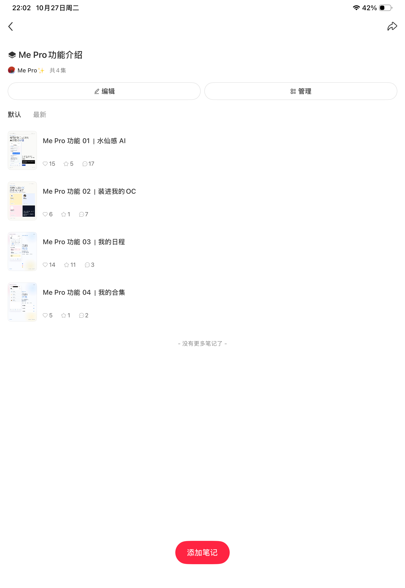
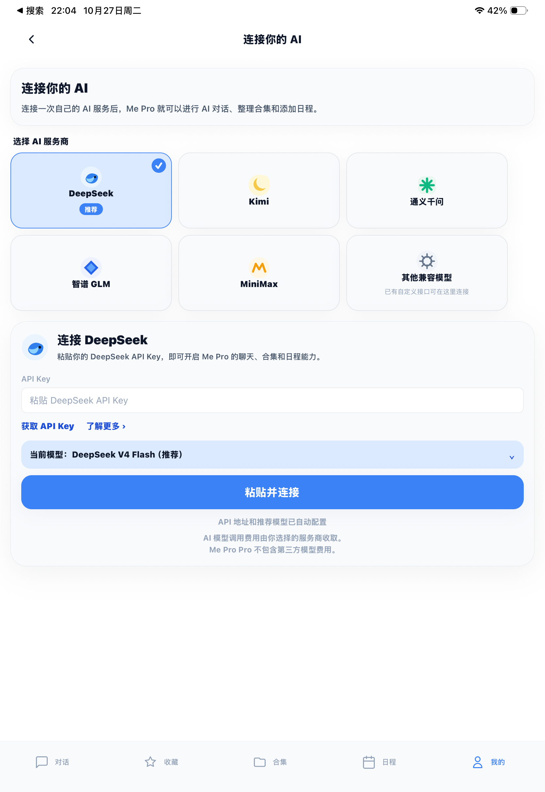
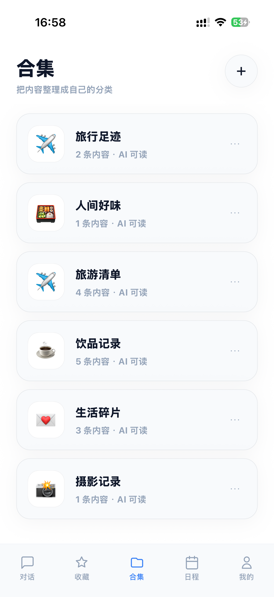

问题发现与运营判断
Me Pro 包含 AI 对话、收藏、合集、日程和 OC（原创角色 / 自设）等功能。我独立负责产品开发与运营，通过社群和反馈了解新用户在首次使用中的问题。
| 已有问题 | 对应判断 |
|---|---|
| 不清楚与通用 AI 助手的差异。 | 需要用具体场景解释功能的用途与价值。 |
| 不熟悉第三方 AI API 配置。 | 配置理解和操作步骤会阻碍初次使用。 |
| 功能较多，不知道从何开始。 | 需要清楚的首次路径与可实际完成的任务。 |
把使用问题同时接到内容教育
与产品引导优化。
用户教育与首次使用优化
我梳理高频疑问，制作 4 篇核心功能介绍笔记，并建立小红书专题合集。合集原图可见“水仙感 AI”“装进我的 OC”“我的日程”“我的合集”四篇内容，用具体使用场景解释功能。
同时调整 Onboarding 新手引导，说明首次使用路径；优化 API 配置页面及引导方式，回应用户对连接和设置的理解障碍。内容教育与产品改动分别承接“为什么用”和“怎样开始用”。
查看功能介绍合集与当前 AI 连接页

合集包含水仙感 AI、OC、日程与合集四篇功能介绍。

展示服务商选择、Key 获取入口、默认配置与费用说明。本图为当前界面，不作为 2.0.2 历史页面或改版前后对比。
用户提供原始截图，未改写图片内容。当前连接页展示引导方式，不用于推断历史配置成功率。
查看支持场景说明的产品界面

AI 整理信息，由用户核对名称、分类与评价。

按旅行、美食、生活片段等场景组织可再次查看的信息。

把计划整理为日程草稿，由用户确认是否添加。
合集与日程交互展示，作为功能场景说明。查看 App Store 产品页
从用户反馈到更新通知
“一开始在配置 api 的时候的引导再清楚些。”
2026.06.16 社群反馈节选，匿名呈现；原始聊天截图本地保留。
| 时间 | 处理环节 | 截图可确认的动作 |
|---|---|---|
| 2026.06.16 | 收到使用反馈 | 用户提交新手任务 6/6 页面，并提出 API 引导和合集封面建议。 |
| 2026.06.28 | 发布更新说明 | 在群内发布 2.0.2 更新说明，包含 AI 连接体验优化与系统日历同步等内容。 |
| 2026.06.28 | 回到社群通知 | 引用用户此前的日历同步诉求，通知对应用户可更新体验。 |
这组记录呈现了“收到问题—推进调整—回群告知”的处理过程。现有材料可确认反馈与更新通知，未包含用户后续复测结果或激活率变化。
新手任务与参与激励
设计 6 项新手任务，用户完成任务、点亮 6 颗星后，可领取 6 天 Pro 体验权益。目的在于让用户实际尝试功能，同时获取后续使用反馈。
另设置 KOC 体验笔记、深度反馈与 OC 内容分享等终身会员奖励条件，由社群承接活动参与、咨询和反馈。
活动规则区分新手体验与永久会员奖励：6 天体验不占永久会员名额；内容与深度反馈按规则审核。群聊中出现 6/6 已完成、可兑换的任务页面截图，可确认用户提交过完成凭据，尚不能据此统计实际兑换人数。
实际观察到，公开发布内容、提交详细反馈和创作 OC，对普通用户仍有较高参与门槛。体验笔记已有产出，但未形成预期传播。这一观察成为后续调整激励方案的依据。
基于竞品用户讨论的机会获客
关注豆包智能体相关用户讨论时，我识别到角色保留、AI 互动和替代产品等需求线索。Me Pro 的 OC 创建、角色设定和聊天能力，与其中部分使用场景存在重合。
我据此通过抖音开展相关用户触达与产品引流尝试，将观察到的需求与产品现有能力连接起来。
这一部分能够说明机会识别与渠道尝试；现有记录尚不足以串联抖音触达、咨询、下载和转化，因此不作为已实现用户迁移的成果。
实际产出与效果边界
现有证据包括四篇功能介绍合集、用户任务完成页面、API 引导反馈、2.0.2 群内更新说明与回访通知，以及当前 AI 连接页，呈现内容教育和产品响应的实际过程。
由于缺少改动前后统一的行为数据，目前能够确认交付动作与反馈处理，尚不能量化首次配置成功率或激活率的变化。社群人数也不等同于活跃或付费用户数。
这个案例体现了我从真实使用问题出发，连接用户教育与产品体验，并结合外部需求线索探索获客机会的运营思路。